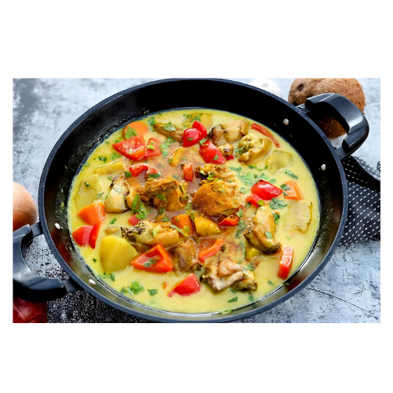

Chicken Curry
Filipino chicken curry is a flavorful dish that combines tender chicken pieces with a rich and aromatic coconut milk sauce. This dish often incorporates spices like curry powder, which gives it a distinct flavor profile that sets it apart from other regional curries. Along with the chicken, it typically features a variety of vegetables such as potatoes, carrots, and bell peppers, adding color and nutrition.
The use of coconut milk makes the sauce creamy and slightly sweet, which balances the spices beautifully. Filipino chicken curry is often enjoyed with steamed rice, making it a comforting and satisfying meal. It is a popular dish in Filipino households, celebrating the country's diverse culinary influences while showcasing local ingredients and flavors.
Origin
Filipino Chicken Curry has its origins in the diverse culinary landscape of the Philippines, influenced by various cultural traditions. While the concept of curry is commonly associated with South Asian cuisine, the introduction of curry to the Philippines can be traced back to the Spanish colonial period in the 16th century. During this time, the Spanish encountered curry dishes in Southeast Asia, particularly in India and Malaysia, and brought those ideas back to the Philippines.
As a result, Filipino Chicken Curry developed its unique identity, combining local ingredients and flavors with the basic concept of curry. The dish is typically made with coconut milk, which is abundant in the Philippines, and a blend of spices like curry powder, creating a milder, creamier version compared to its Indian counterparts.
Filipino Chicken Curry has become a popular household dish, often served during family gatherings and special occasions. Its preparation varies from region to region, with different families adding their personal touch, reflecting the diverse culinary heritage of the Philippines. Today, it is enjoyed by many and represents the rich tapestry of influences that shape Filipino cuisine.
Ingredients
- 1 kg (about 2.2 lbs) chicken pieces (legs, thighs, or a mix)
- 2 tbsp vegetable oil
- 1 medium onion, chopped
- 4 cloves garlic, minced
- 1 inch ginger, minced or sliced
- 1-2 tbsp curry powder (adjust to taste)
- 1 medium potato, peeled and cubed
- 1 medium carrot, sliced
- 1 bell pepper, sliced (red or green)
- 1 can (400 ml) coconut milk
- 1 cup chicken broth or water
- Salt and pepper to taste
- 1-2 tbsp fish sauce (optional)
- Green onions or cilantro for garnish (optional)
How to Cook
- Heat the vegetable oil in a large pot or deep skillet over medium heat.
- Add the chopped onion and sauté until translucent.
- Add the minced garlic and ginger, and cook until fragrant, about 1-2 minutes.
- Add the chicken pieces to the pot, cooking until they are browned on all sides.
- Stir in the curry powder and cook for an additional 1-2 minutes, ensuring the chicken is well coated with the spices.
- Add the cubed potatoes, sliced carrots, and bell pepper to the pot.
- Pour in the coconut milk and chicken broth (or water), stirring to combine.
- Bring the mixture to a gentle boil, then reduce the heat to low.
- Cover the pot and let it simmer for about 30-40 minutes, or until the chicken is cooked through and the vegetables are tender.
- Stir occasionally and adjust the seasoning with salt, pepper, and fish sauce, if using.
- Once done, remove from heat and let it cool for a few minutes.
- Serve hot over steamed rice and garnish with green onions or cilantro if desired.